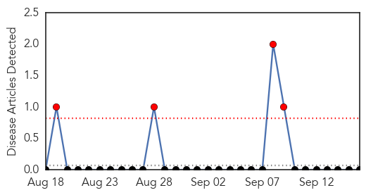
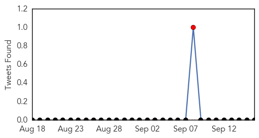
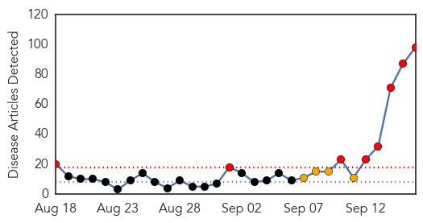
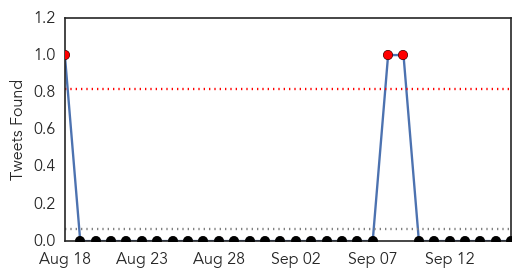
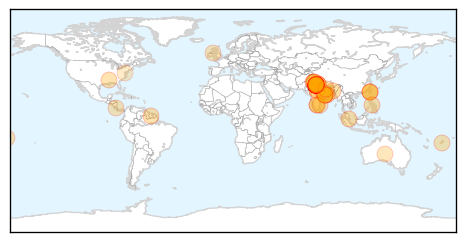
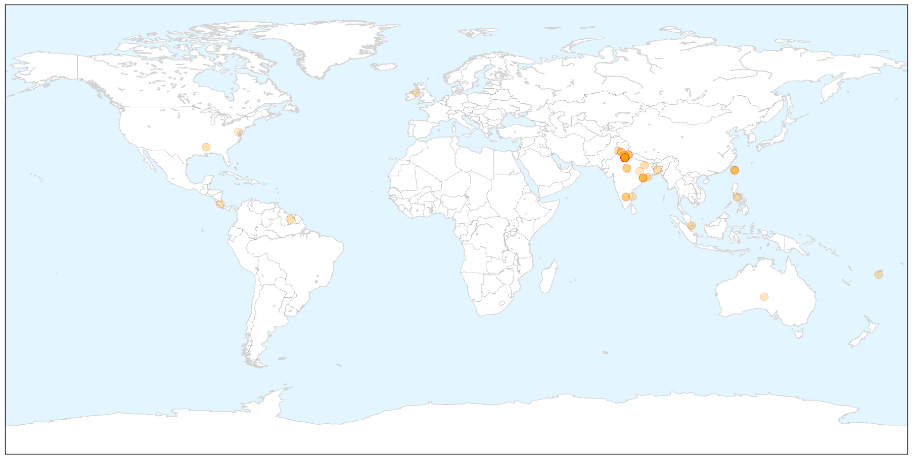
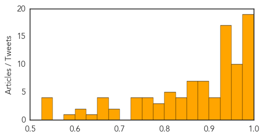

Yellow Fever
30-Day Web Trend
4 alerts, 0 warnings

30-Day Twitter Trend
1 alerts, 0 warnings

Article Locations


Article Confidences

Top Articles:
-
No articles found for Sep 16, 2015
Top Tweets:
-
No tweets found for Sep 16, 2015
Dengue Fever
30-Day Web Trend
8 alerts, 4 warnings

30-Day Twitter Trend
3 alerts, 0 warnings

Article Locations

X

Article Confidences
Top Articles:
- 0.998
- Two dozen Nepalis return from abroad with dengue
- 0.993
- Delhi hospital sees huge rush of dengue-affected patients - Xinhua
- 0.991
- Tracking Sickness Through a Cellphone – Next City
- 0.991
- Can Google predict disease outbreaks?
- 0.991
- E. China reports 1st dengue fever patient from overseas
- 0.989
- Dengue scare haunts state
- 0.988
- Civic bodies under-reporting dengue toll, hospital data show
- 0.986
- More than twofold jump in dengue cases
- 0.985
- More than twofold jump in dengue cases
- 0.985
- Viral Infection Cases See an Increase in City
- 0.984
- Delhi battles dengue fever surge
- 0.983
- India Grapples with Dengue Fever Outbreak
- 0.982
- Xiamen airport confirms 3 cases of dengue fever amid outbreak in Taiwan
- 0.982
- Death toll from dengue fever rises to 9 in Indian capital
- 0.981
- Indian hospitals warned not to turn away dengue patients
- 0.981
- Cases of Dengue Fever Multiply in Southern Taiwan
- 0.978
- India Grapples with Dengue Fever Outbreak
- 0.978
- No leaves for doctors in Delhi
- 0.977
- 14 Die of Dengue, Delhi Hospitals To Take in More Doctors
- 0.975
- Indian hospitals warned not to turn away dengue patients
- 0.974
- Dengue rise finger at migrant natives & ignorance
- 0.971
- Hospitals to Take in More Doctors, Staff to Tackle Dengue Outbreak
- 0.967
- Delhi hospitals denying dengue treatment to be penalised
- 0.966
- Dengue crisis: Rapid fire with JP Nadda, Satyendar Jain : India, News
- 0.961
- Dengue outbreak: Two more deaths in Delhi, toll rises to 11
- 0.958
- Union Health Minister to hospitals: No Dengue patient to be denied treatment; increase bed strength
- 0.955
- Delhi corporations intensify preventive measures, but it may not be of much help
- 0.955
- Dengue crisis: Delhi corporations intensify preventive measures, but it may not be enough
- 0.955
- Indian hospitals warned against turning away dengue patients
- 0.950
- Delhi govt caps fee on dengue test at Rs 600
- 0.949
- Act against refusal, overcharging by hospitals, Centre asks Delhi Govt
- 0.949
- Odisha says well prepared to tackle dengue menace
- 0.948
- Woman constable dies of dengue in Ghaziabad, 60 tested positive
- 0.947
- Lady constable dies of dengue in Ghaziabad, 60 tested positive
- 0.947
- India's hospitals accused of rejecting dengue patients
- 0.946
- Haryana health department puts hospitals on high alert against dengue : India, News
- 0.945
- Delhi hospitals struggle with dengue overload - Regional
- 0.944
- Dengue kills three more in Delhi, government caps tests at Rs.600 (Intro Roundup)
- 0.942
- Odisha says well prepared to tackle dengue menace
- 0.940
- Dengue claims another life in Delhi, government caps tests at Rs.600 (Roundup)
- 0.937
- Toll rises to 13, Delhi's special Assembly session to rein in private hospitals
- 0.937
- Boy, 6, dies after Safdarjung Hospital told his parents he did NOT have dengue
- 0.936
- 585 dengue patients sharing 370 beds in Hindu Rao Hospital
- 0.936
- Eleven dead but worst is yet to come: All you need to know Delhi's dengue crisis
- 0.936
- New Delhi Faces Its Worst Dengue-Fever Outbreak in 5 Years
- 0.927
- Dengue toll 14 in Delhi, extra beds for hospitals
- 0.917
- Dengue catches Delhi government unawares
- 0.913
- Indian hospitals warned against turning away dengue patients
- 0.904
- Delhi government orders hospitals to take in more doctors, staff to tackle dengue outbreak
- 0.901
- India outraged as another child dies of dengue after SIX Delhi hospitals turn desperate family away
Showing top 50 articles...
Top Tweets:
-
No tweets found for Sep 16, 2015